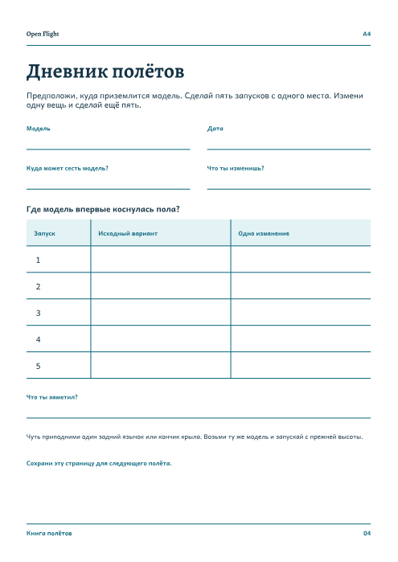

Для учителей
Подготовьте урок о полёте бумажных моделей. Выберите размер команды и формат бумаги, рассчитайте количество копий и предложите командам простой опыт.
Рассчитать тираж для класса
Подготовьте урок о полёте бумажных моделей. Выберите размер команды и формат бумаги, рассчитайте количество копий и предложите командам простой опыт.
Рассчитать тираж для класса